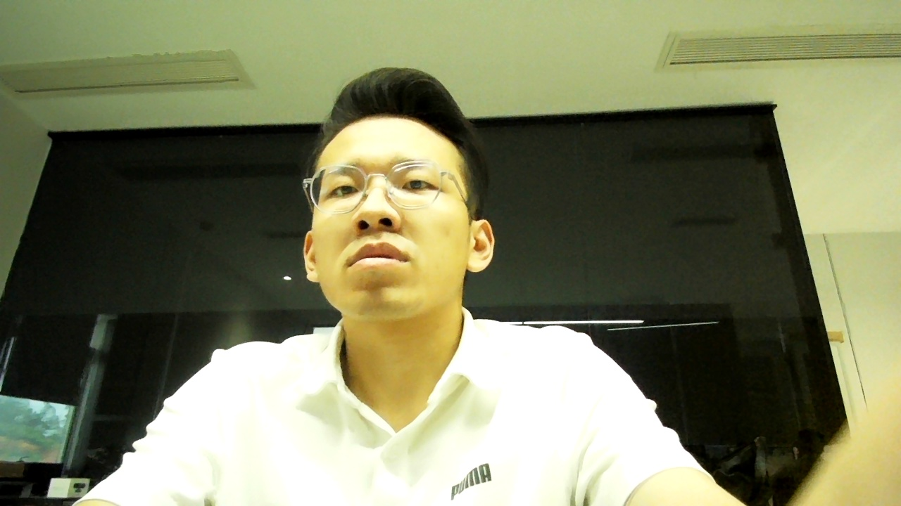
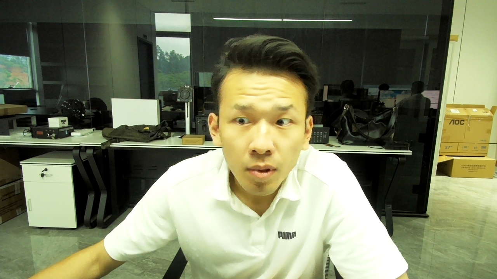
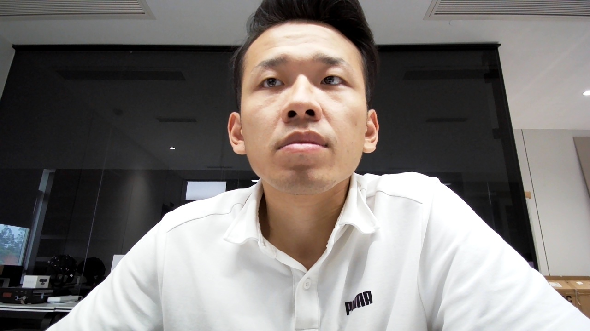
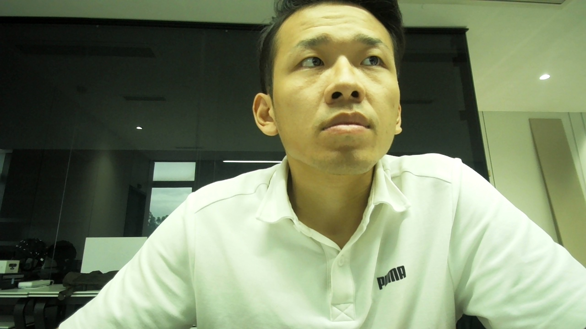

总览
最佳 RMSE
180.7
px，四摄无眼镜 cubic
平均误差
142.9
px，比一摄好 19.9%
P95 误差
342.5
px，与一摄基本持平
检测率
100%
500/500 有效样本
结论
最新四摄方案已经超过历史最好一摄结果。平均误差降低 35.4 px，RMSE 降低 27.2 px；检测率同为 100%。当前仍是可用原型水平，尚未达到研究级眼动仪标准。
| 推荐标定 | calibration_no_glasses_cubic_round2.json |
|---|---|
| 推荐姿态 | 不戴眼镜，脸无遮挡，至少两路清楚看到双眼 |
| 核心参数 | --adaptive-pupil --cubic --calibration-rounds 2 |
一摄与四摄对比
| 指标 | 一摄最好历史结果 | 最新四摄最佳结果 | 四摄变化 |
|---|---|---|---|
| 标定文件 | calibration_left_trial2.json |
calibration_no_glasses_cubic_round2.json |
推荐 |
| RMSE | 207.9 px | 180.7 px | 好 27.2 px，约 13.1% |
| 平均误差 | 178.3 px | 142.9 px | 好 35.4 px，约 19.9% |
| P95 误差 | 340.4 px | 342.5 px | 差 2.1 px，约 0.6% |
| 检测率 | 100.0% | 100.0% | 持平 |
参数优化过程
实验表
| 方案 | 标定文件 | RMSE | 平均误差 | P95 | 检测率 |
|---|---|---|---|---|---|
| 无眼镜，两轮 cubic | calibration_no_glasses_cubic_round2.json | 180.7 | 142.9 | 342.5 | 100.0% |
| 戴眼镜，adaptive pupil | calibration_adaptive_pupil.json | 189.3 | 153.3 | 356.5 | 97.8% |
| 无眼镜，两轮二次 | calibration_no_glasses_round2.json | 314.4 | 246.6 | 730.4 | 100.0% |
| 无眼镜，单轮二次 | calibration_no_glasses.json | 334.1 | 315.6 | 493.2 | 100.0% |
| 线性标定 | calibration_linear.json | 646.1 | 566.7 | 1094.1 | 68.8% |
当前最佳四摄逐点表现
| 点位 | 坐标 | 平均误差 | RMSE | P95 | 检测率 |
|---|---|---|---|---|---|
| p0 | (480, 324) | 190.4 px | 224.6 px | 312.4 px | 100% |
| p1 | (1440, 324) | 187.8 px | 236.8 px | 494.2 px | 100% |
| p2 | (960, 540) | 117.1 px | 166.3 px | 370.4 px | 100% |
| p3 | (480, 756) | 110.5 px | 127.0 px | 217.8 px | 100% |
| p4 | (1440, 756) | 108.8 px | 114.2 px | 151.8 px | 100% |
残余问题主要在上方点位，尤其 p1 的 P95 偶发误差较高。
当前算法栈
一句话概括
当前不是深度学习方案，而是传统 OpenCV 检测 + adaptive pupil 瞳孔增强 + 多摄融合 + cubic 多项式回归标定。
| 模块 | 当前用法 | 说明 |
|---|---|---|
| 摄像头 | 4 个普通 USB 摄像头，索引 1,2,0,3 | 可见光，多路同步稳定性有限 |
| 检测后端 | --backend haar | OpenCV Haar cascade 检测脸和眼部 |
| 瞳孔增强 | --adaptive-pupil | 多阈值、暗点和椭圆拟合增强瞳孔估计 |
| 多摄融合 | --partial-fusion --min-active-cameras 2 | 至少 2 路有效，缺失摄像头时用单摄模型平均 |
| 标定回归 | Ridge + Huber robust fit | --adaptive-ridge --robust-fit 抑制异常点和过拟合 |
| 坐标映射 | 三次多项式 | --cubic 对角落和非线性误差改善明显 |
| 最佳标定 | calibration_no_glasses_cubic_round2.json | 无眼镜，两轮标定，每点 60 样本 |
摄像头画面检查




这些截图用于检查遮挡、眼镜反光、低头、摄像头角度等因素。最佳标定建议不戴眼镜，并保证至少两路清晰看到双眼。
行业标准判断
| 当前指标 | 像素误差 | 粗略视觉角度 |
|---|---|---|
| 平均误差 | 142.9 px | 约 3.8° |
| RMSE | 180.7 px | 约 4.8° |
| P95 | 342.5 px | 约 9.0° |
判断
当前检测率已经可用，但精度仍未达到研究级眼动仪标准。商业研究级设备通常以约 0.25°-0.5° 作为典型精度范围，当前系统更适合粗略交互、区域判断和原型验证。
参考： Tobii eye tracker principles， SR Research EyeLink 1000 Plus， EyeLink validation reference
消费级水平判断
| 设备/水平 | 典型精度 | 定位 |
|---|---|---|
| Tobii Eye Tracker 5 独立评测 | 约 0.74° | 成熟消费级远程眼动仪 |
| Tobii EyeX 论文评测 | <0.6° | 低成本桌面眼动设备 |
| Pupil Labs Neon | 1.3°-1.8° | 轻量穿戴式眼动方案 |
| 当前四摄原型 | 平均约 3.8°，RMSE 约 4.8° | 普通 USB 摄像头原型 |
结论
当前系统已经达到“消费级原型”水平，但还没有达到“消费级产品”水平。检测率很好，精度和抗干扰能力仍是主要差距。
| 检测率 | 达到可用水平 100% |
|---|---|
| 精度 | 未达成熟消费级 约差 3-6 倍 |
| 抗眼镜/遮挡 | 仍需改进 反光和遮挡影响明显 |
| 推荐用途 | 粗略交互、区域判断、原型验证 |
主要差距
| 差距 | 影响 | 改进方向 |
|---|---|---|
| 没有红外补光/角膜反光点 | 瞳孔中心不稳定，抗光照差 | 红外摄像头 + 850nm 补光 |
| Haar 检测粗糙 | 姿态、眼镜、半闭眼容易失败 | MediaPipe 或专用眼部关键点模型 |
| 普通 USB 摄像头几何不稳定 | 头动和视角变化导致映射漂移 | 固定支架、畸变校正、头动补偿 |
| 缺少眼球模型 | 只能做经验映射，外推弱 | 瞳孔-角膜反光向量和个体化模型 |
消费级参考： Tobii Eye Tracker 5 specs， Tobii Eye Tracker 5 evaluation， Tobii EyeX evaluation， Pupil Labs Neon specs
红外升级建议
推荐采购路线
先买 2 个黑白全局快门无 IR-cut 摄像头 + 1 到 2 个 850nm 可调红外补光灯，先做双摄红外验证，效果明显后再扩到四摄。
| 首选摄像头 | Arducam OV9281 USB monochrome global shutter no IR filter |
|---|---|
| 备选摄像头 | ELP OV9281 monochrome global shutter USB camera |
| 高预算 | The Imaging Source DMK USB 黑白工业相机 |
| 补光 | 850nm 可调亮度红外补光灯，建议单独购买 |
为什么红外重要
| 问题 | 当前可见光方案 | 红外方案改善 |
|---|---|---|
| 瞳孔定位 | 受虹膜颜色、屏幕亮度、阴影影响 | 850nm 下瞳孔对比更稳定 |
| 角膜参考 | 没有稳定角膜反光点 | 可以利用补光产生 glint 做几何参考 |
| 眼镜影响 | 屏幕反光和镜框干扰明显 | 可控红外角度能降低不可控反光 |
| 消费级差距 | 平均约 3.8° | 有机会向 1°-2° 区间推进 |
安全建议：不要用高功率红外灯直射眼睛。先低亮度、斜向、柔光，画面里瞳孔清楚且不过曝即可。
命令
运行当前最佳四摄
python "2026-05-13/usb/dual_usb_eye_tracker.py" --backend haar --use-cameras all --camera-indexes 1,2,0,3 --partial-fusion --min-active-cameras 2 --adaptive-pupil --load-calibration calibration_no_glasses_cubic_round2.json --windowed
重新标定当前最佳四摄
python "2026-05-13/usb/dual_usb_eye_tracker.py" --backend haar --use-cameras all --camera-indexes 1,2,0,3 --partial-fusion --min-active-cameras 2 --adaptive-pupil --adaptive-ridge --robust-fit --cubic --calibration-rounds 2 --samples-per-point 60 --calibration calibration_no_glasses_cubic_round2.json --validate --windowed